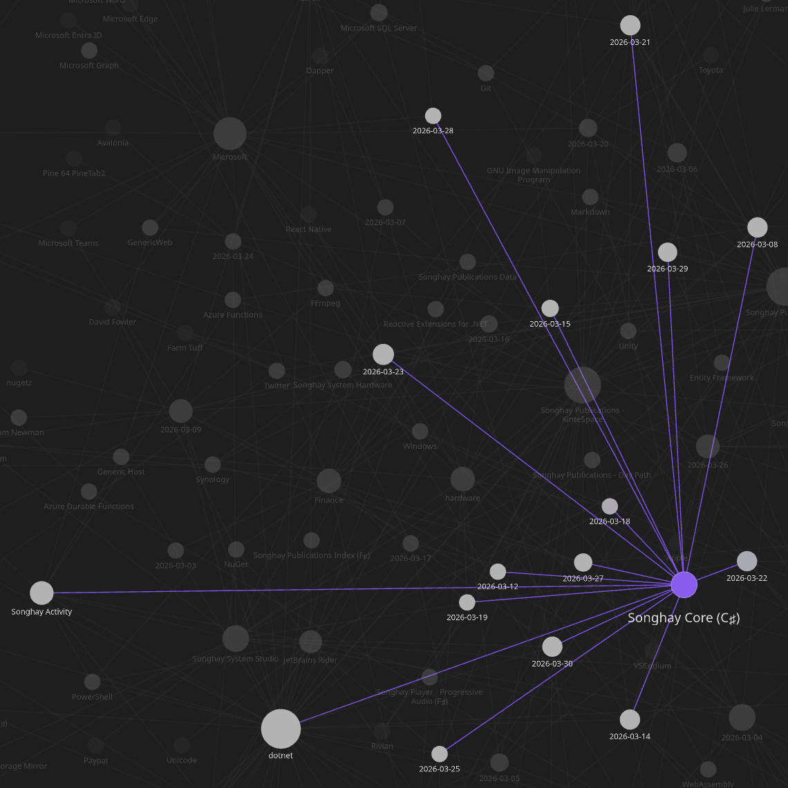
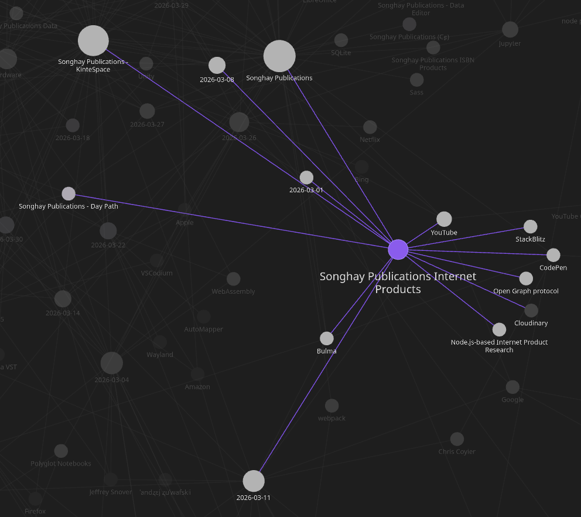
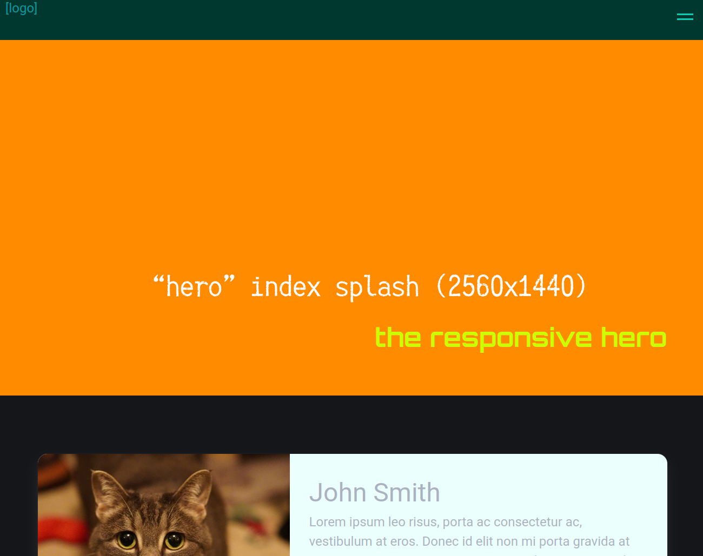
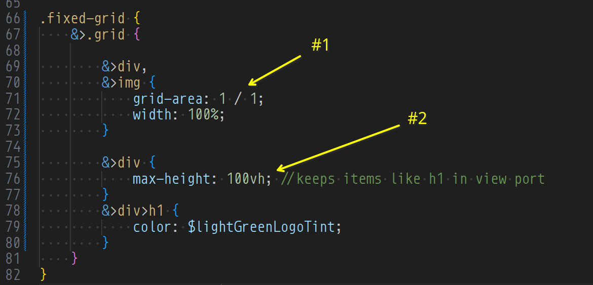

studio status report: 2026-03
Month 03 of 2026 continued not getting the re-release of kintespace.com almost out the ‘door.’ This delay is well within the realm of inexcusable! Here were my alleged blockers:
- At the beginning of this month, I wrote in my notes, ’The time is long overdue to get to know the
FormData[📖 docs ] interface as a foundational abstraction in JavaScript.’ …and then I took a day writing extensive notes 😐 - I made other new Entity Framework notes for #day-job and Studio futures, officially recognizing “Field-only properties” for the first time (because this is foundation of building with EF under the influence of DDD).
- I slipped into possibly needing paging rows from Microsoft SQL Server at the current #day-job, discovering to my embarrassment that
OFFSEThas been around since SQL Server 2012 (11.x) 😐😲 …more notes for the day there… - Then (mid-month) I had to start filling out my U.S. tax forms for 2025 🤦
- Then I started working (obsessively) on a new PR (Dev/version 10.0.0#187) for the .NET 10 version of
SonghayCore⌛
This ‘obsession’ ate up about 12 days for month 03:

Only three days were used for Publications:

Selected notes of month 03 follow:
Songhay Publications Internet Products: the index cards layout has problems

- the cards are too tall above the Bulma widescreen breakpoint
- there is a ‘flash’ of white space on the bottom of the card image
Songhay Publications Internet Products: the responsive ‘hero’ image layout is functional 😐
The two-cell CSS grid layout appears to be a success:


- the
grid-areaselection applied to both cells of this two-cell grid here is the ‘secret sauce’ that makesimgeffectively a background image (also, selecting awidthof 100% assure that the grid will not “flash” white space on the x-sides) - the
max-heightselection of100vhprevents the visuals ‘stacked’ on top ofimgfrom falling out of the view port
Polyglot Notebooks: “DEPRECATION ANNOUNCEMENT: Polyglot Notebooks” 😐😠
They have not done something like this, so personal to me, since they dropped Microsoft Money:
The Polyglot Notebooks Extension will be deprecated on March 27th, 2026.
❓What This Means
- The extension will not be disabled or uninstalled from your VS Code.
- You can continue using the extension after the deprecation date if you don't uninstall it, but future VS Code updates may eventually break it.
- No new features will be added to Polyglot Notebooks or the .NET Interactive kernel for Jupyter notebook usage.
- Bug fixes and support will end immediately.
- The extension will be marked as deprecated in the VS Code marketplace.
- Issues in this repository related to the Polyglot Notebooks extension will be closed as not planned.
- Issues in this repository related to using .NET Interactive as a kernel in other Jupyter frontends will be closed as not planned.
This is a definitive kick in the face for data scientists:
"This is a disaster for us. We use polyglot Notebooks for All our data science courses. All the people saying do not trust or rely on Microsoft were sadly right again," remarked a user on Reddit.
The deprecation has surfaced another long-standing issue, which is that Azure Data Studio (ADS), a fork of VS Code specifically for working with SQL databases, is set for retirement at the end of this month. The main replacement for ADS is meant to be the SQL Server extension for VS Code, but ==Polyglot Notebooks were documented as the recommended replacement for data analysts==, as opposed to developers or DBAs (database administrators).
—“Microsoft deprecates Polyglot Notebooks: Developers react”
Steve Sanderson answers the need to specify the hell out of AI 😐

Keynote: AI-Powered App Development - Steve Sanderson - NDC London 2026
Instead of doing something resembling something I saw in a JetBrains lecture (the “Intent Integrity Chain 😐⛓”), Sanderson introduces what the “community” is actually doing: Agent Skills:
Think of Agent Skills as "how-to guides" for AI assistants. Instead of the AI needing to know everything upfront, skills let it learn new abilities on the fly, like giving someone a recipe card instead of making them memorize an entire cookbook.
The bit about Ralph Wiggum reveals that AI agents can deliberately not complete a task—so they have to be told to finish, sometimes repeatedly:

AuthHero: “SPA Authentication: A Complete Guide (2026)”
Here is my introduction to BfF:
The "best" way to implement authentication depends on a single critical question: Does your session need to live on one domain, or across many?
1. The BFF (Backend-for-Frontend) ⭐ Recommended
The gold standard for security. A server-side proxy handles the login and stores tokens in a secure, server-side session. The SPA only sees a first-party,
Secure,HttpOnlycookie.
additional reading
- “Sam Newman - Backends For Frontends”
- “Backend-for-Frontend (BFF) Architecture in 2025: Why Developers Should Care|Dev Tech Insights”
- “Backends for Frontends pattern”
- “Authentication and authorization to APIs in Azure API Management”
Dapper: “How C# Strings Silently Kill Your SQL Server Indexes in Dapper” #day-job #to-do
nvarchar-to-varchar conversion is effectively a full table scan:
When you pass a C#
stringthrough an anonymous object, Dapper maps it tonvarchar(4000). That’s the default mapping forSystem.Stringin ADO.NET — and honestly, it makes sense from a “safe default” perspective. But if your column isvarchar, SQL Server has to convert every single value in the column tonvarcharbefore it can compare. This is called CONVERT_IMPLICIT, and it means SQL Server can’t use your index. Full scan. Every time.…
The fix is almost embarrassingly simple. You just tell Dapper explicitly that the parameter is
varchar, notnvarchar. You do this withDynamicParametersandDbType.—“How C# Strings Silently Kill Your SQL Server Indexes in Dapper”
Microsoft SQL Server: OFFSET has been around since SQL Server 2012 (11.x) and later versions #day-job 😐😲
I castigate myself by openly admitting (in these notes) that I was unaware that Microsoft SQL Server supported “paging” data with OFFSET [📖 docs ] since the 2012 time frame 🤦 I have been unaware of this for over 14 years!
Previously, I thought MySQL was strangely alone in this functionality among the databases used in my Studio. While MySQL uses LIMIT and OFFSET [📖 docs ], it appears that SQL Server uses TOP and OFFSET. By the way, speaking of the databases used in my Studio, SQLite also uses LIMIT and OFFSET [📖 docs ].
Further reading: “SQL Server Pagination with COUNT(*) OVER() Window Function” 📖
eleventy: “Eleventy v4 will be Build Awesome v4.”—what the hell is this? 😐
First and foremost, it’s very important to recognize how instrumental Font Awesome has been to the progress the Eleventy project has made in the last 18 months — and you can review a lot of those in the Eleventy, 2025 in Review highlights!
Secondly, ==the name change== is not a clean break for Eleventy — this is a continuation of the open source project under the larger Awesome banner. Eleventy v4 will be Build Awesome v4. I, Zach, am still lovingly shepherding the open source project forward, the same as before.
stupid jQuery tricks: selecting the text of an option element instead of its .val() 😐🐕
The following will get the contents of the option.value attribute:
const myValue = $('select#my-thing').val();
…but sometimes we’ll need the .text() of the selected option; we can get this using the :selected pseudo class:
const myThing = $('select#my-thing');
const myValue = $('option:selected', myThing).text();
RxJS: “Advanced RxJS with Ben Lesh”
The title of this video is misleading:

Advanced RxJS with Ben Lesh | Build IT Better S01E16
One of the big takeaways from this talk is the large number of JavaScript libraries that “accidentally” reinvents the Observable.
Songhay Core (C♯): HtmlUtility re-org 😐🚜
Here is the new intent:
.
├── Models
│ ├── RegexScalars.cs
.
.
├── Xml
│ ├── HtmlUtility._.cs
│ └── HtmlUtility.Regex.cs ✨
└── RegexUtility.cs ✨
RegexScalars.cscentralizes allRegexpatterns in the entire Core.HtmlUtility._.csis the oldHtmlUtility.cs, renamed for traditional partial-class file ordering preferences.HtmlUtility.Regex.cscentralizes all HTML-string-relatedRegexpartial methods and pattern getters in one place.RegexUtility.cscentralizes all ‘simple’-string-relatedRegexpartial methods and pattern getters in one place.
VSCodium: okay, while working on a plain text file…
…at the #day-job, I was unable to use the
open pull requests on GitHub 🐙🐈
- https://github.com/BryanWilhite/SonghayCore/pull/187
- https://github.com/BryanWilhite/Songhay.HelloWorlds.Activities/pull/14
- https://github.com/BryanWilhite/dotnet-core/pull/67
sketching out development projects
- upgrade
SonghayCore,Songhay.Publications,Songhay.DataAccess, etc. to .NET 10 📦🔝 - consider using Lerna to coordinate the two levels of
npmscripts 🧠👟 - use a Jupyter Notebook to track finding and changing Amazon links to open source links 📓⚙
- use a Jupyter Notebook to convert flickr links to Publications (responsive image) links 📓⚙
- establish
DataAccesslogic for Obsidian markdown metadata 🔨✨ - establish
DataAccesslogic for Index data, including adding and removing Obsidian documents (and Segments) 🔨✨ - package
DataAccesslogic in*Shellproject fornpmscripting 🚜✨ - convert rasx() context repo to the relevant conventions shown in the diagram above 🔨🚜
- retire the old
kinte-spacerepo for kintespace.com 🚜🧊 - convert Songhay Day Path Blog repo to the relevant conventions shown in the diagram above 🔨🚜
- re-release Songhay Dashboard by updating its repo to the relevant conventions shown in the diagram above 🔨🚜
- start development of Songhay Publications Index (F♯) experience for WebAssembly 🍱✨
- start development of Songhay Publications - Data Editor to establish a GUI for
*Shelland provide visualizations and interactions for Publications data 🍱✨